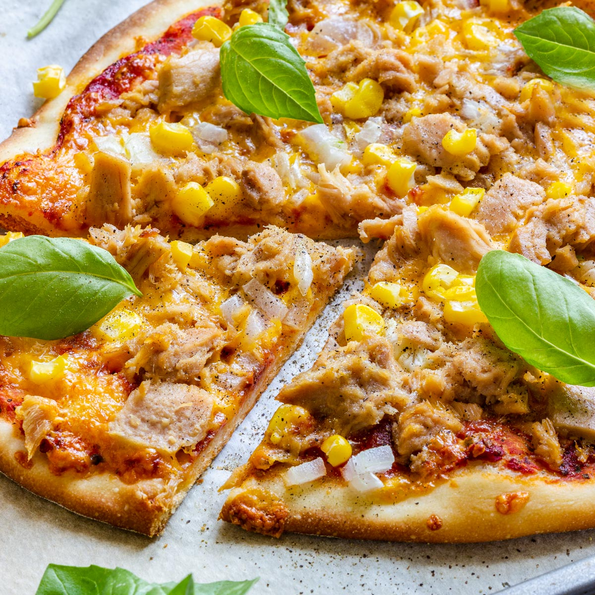

Pizza Tuna

This tasty and easy tuna pizza is amazing all year round. You may make your own dough, use store-bought or perhaps tortilla. Whatever you choose it is absolutely amazing.
We love pizza, of course, but I am a huge fan of tuna pizza. Often I would change toppings; sometimes I would use peppers, and feta or goat cheese and from time to time I make this just like this. Let me tell you, there is nothing like homemade easy tuna pizza
Ingredients
- 1 pound pizza dough or 1 (10 ounces), pre-baked pizza crust works too
- 1/4-1/2 cup prepared pizza sauce
- 1 cup shredded pizza cheese (mozzarella, provolone, parm, or a pizza blend)
- 1 (6.7 ounces) jar Tuna in Olive Oil, reserve oil
- 1/4 cup capers, rinsed
- 1/2 cup pitted black olives, sliced
- 1/4 red onion, chopped
Instructions
- Preheat oven to 450 degrees F
- Place pizza crust on a pizza pan or baking sheet. Spread pizza sauce over crust and sprinkle with half the cheese.
- Scatter tuna, capers, chopped red onion, olives, and remaining cheese over the top.
- Drizzle a bit of reserved tuna oil over the top of the pizza
- Bake until cheese is golden brown around edges of pizza, 12-15 minutes
- Serve with salad and enjoy it